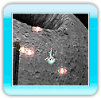
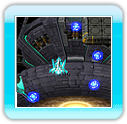
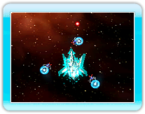
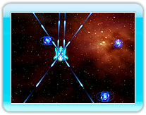

11
フォースコントロール
フォースには２種類のフォーメーションがあり、フォースフォーメーション変更ボタンで、フォーメーションを交互に切り替えることができます。
また、フォースにはエネルギーがあり、「リリースフォーメーション」にしているとエネルギーを消費します。
消費したエネルギーは「ホールドフォーメーション」でチャージすることができます。エネルギーはチャージすることによって、青色から赤色へと変化します。

エネルギー最大

エネルギー最小
ホールドフォーメーション
防御に適したフォーメーションです。フォースがシーザーの周りを回転し、敵の攻撃からシーザーを守ります。
また、ホールドしている間、フォースのエネルギーをチャージすることができます。
リリースフォーメーション
 攻撃に適したフォーメーションです。フォースがシーザーから離れ、自らの判断で敵を攻撃します。フォースの動きは、コントローラにより左右にコントロールすることができます。また、リリースしている間、フォースのエネルギーを消費します。